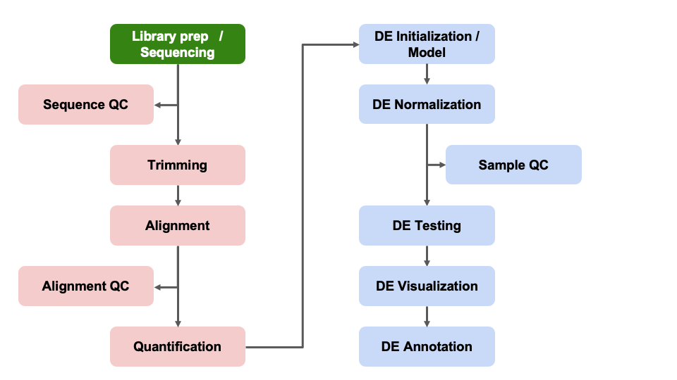
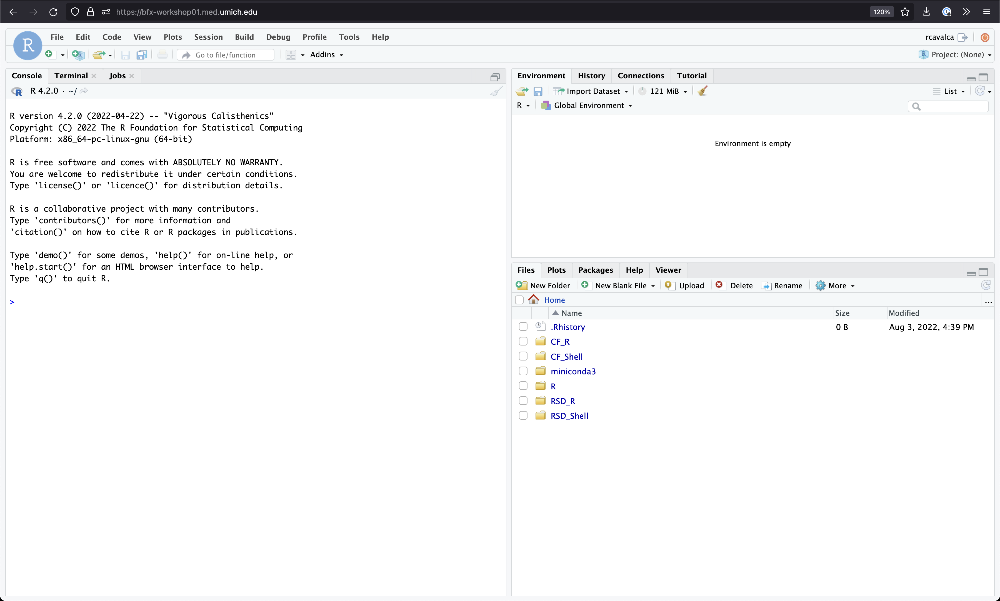
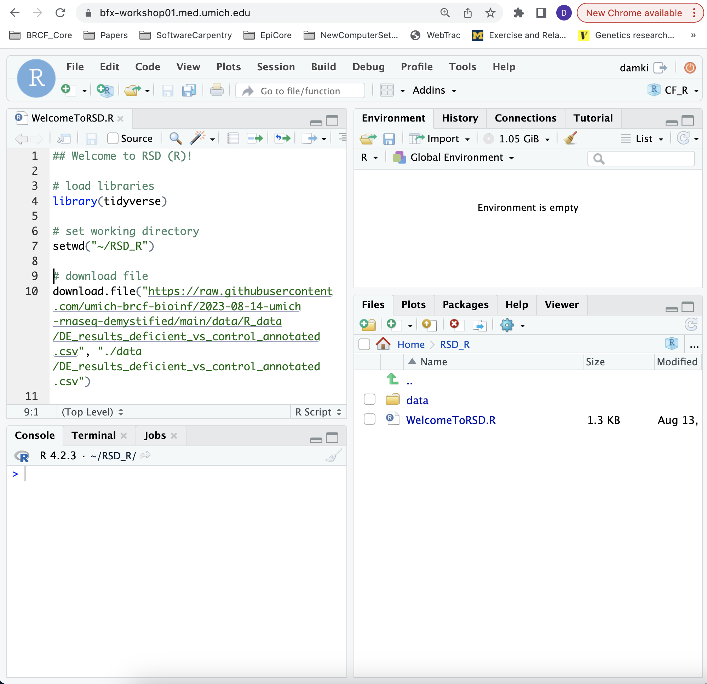

Differential Expression Workflow
So far in the workshop, we’ve taken some steps to answer the
following questions regarding RNA-seq data:
- Are there quality concerns for my sequencing data?
- How can my sequencing data be processed to remove low quality bases
and/or reads?
- How are raw sequencing data transformed into gene-level count
data?
Today we will proceed through key steps in a differential expression
(DE) analysis, starting from a count table that’s similar to what you
generated in the first half of the workshop and one of the outputs
included in the data
that the Advanced Genomics Core delivers for RNA-seq libraries.

At the conclusion of this workshop, we hope that you will be better
positioned to consider these key questions when planning and executing a
DE analysis:
- How do I use R/Rstudio and organize my files?
- What tools should I use to execute my DE analysis?
- How can I control for technical variation in my experimental
design?
- What is the scale of differences expected between my treatment
groups?
- Are there covariates that should be considered?
- What comparisons are relevant to my biological question?
- What outputs should I expect from a DE analysis?
Getting Started in RStudio
In this module, we will learn:
- How to set up a differential expression analysis, using reproducible
research principles
- What is DESeq2 and why it is widely used for differential expression
comparisons
- How to load and review gene count data
Log on to RStudio Server
Open a web browser to the following URL: http://bfx-workshop01.med.umich.edu
You should now be looking at a page that will allow you to login to
the RStudio server:

Enter your user credentials and click Sign In. The
credentials are the same used earlier in the workshop and were provided
via an email entitled “UM BioinfCore Workshop Login”.
However, if you forget yours, a helper can retrieve it for you if you
ask in Slack. You should now see the RStudio interface:

What are we working towards?
To refresh ourselves on the interface of RStudio, look in the lower
right pane, which lists the files and folders for the selected
directory. Click on the RSD_R folder and then click on the
WelcomeToRSD.R script to open it.
There should now be four panes in your RStudio window, with the
WelcomeToRSD script in the upper left pane, this is the
“Source” or “Scripts” pane. It displays the code that we will write to
perform our analysis.

In the Scripts pane, there is a line of icons, towards the right side
of the pane there is a Run button. First highlight all the
code in the Source pane, and then click Run.
Checkpoint
What just happened?
We see in that our code has been run in the Console
panel, including some warning messages.
We see that a number of objects were created in our Environment
panel including an object named DE_results.
We see that the Plot tab now has a volcano plot displayed - Note:
if the plot is not displayed, you may need to expand the right panel
boundary before re-running the last line of the script
What does this volcano plot show?
Now that we have seen the end results of a DE analysis, any
questions?
Create an RStudio Project
Just like in Computational Foundation workshop, let’s start our
analysis by creating a project where we can store our data, scripts and
outputs.
- To create a project, go to the File menu, and click
New Project…. The following window will appear:

In this window, select Existing Directory. For
“Project working directory”, click Browse…, select the
“RSD_R” folder, and click Choose. This will use the
/home/workshop/user/RSD_R folder as the project
directory.
Finally click Create Project. In the “Files” tab of
your output pane (more about the RStudio layout in a moment), you should
see an RStudio project file, RSD_R.Rproj. All RStudio
projects end with the “.Rproj” file extension.
Note that there is already a data/ folder which contains
the data we will use for these lessons.
Creating an R script
Let’s create an R script file:
- Click the File menu and select New File and
then R Script.
- Before we go any further, save your script by clicking the save/disk
icon that is in the bar above the first line in the script editor, or
click the File menu and select Save.
- In the “Save File” window that opens, select New Folder.
Name it “scripts”.
- Finally, name your file “diffex” in the “File name”
field.
The new script diffex.R is now in the
scripts folder. You can see that by clicking the
scripts folder in the “Files” pane. And you can go back up
to the main project folder by clicking the .. to the right
of the up arrow in the “Files” pane. By convention, R scripts end with
the file extension .R.
File organization for reproducible research
Part of any successful bioinformatics analysis is documentation and
file organization, which are important aspects of “reproducible
research” (see: Nobel,
2009).
To follow best practices for file organization for reproducible
research, we should make distinct locations for:
We can already see that there a data/ folder and we just
created the scripts/ folder with the RStudio GUI. To
organize our files , we’ll create some more directories in the
RSD_R folder which is now our project root and current
working directory after creating the RStudio Project in that location,
using the dir.create() function in R.
# create output directory and subdirectories to use for our analysis
dir.create('outputs')
dir.create('outputs/figures')
dir.create('outputs/tables')
Checkpoint: Please use the green ‘check’ if you
have saved your code file and see the data,
scripts, and outputs directories in the
RSD_R folder and the red ‘x’ if you do not.
Reminder: RStudio code execution
Ctrl+Enter is a standard shortcut in RStudio to
send the current line (or selected lines) to the console. If you see
> in the Console, then R has executed the command. If
you see a +, this means that the command is not complete, R
thinks there is more to your command. You can use the esc to
get out of this state.
Reminder: Object naming conventions
- Cannot start with numbers
- Cannot include dashes
- Cannot have spaces
- Should not be identical to a named function
- Dots and underscores can separate parts of names, alternatively
CamelCase accomplishes this
Starting our analysis
Load Packages
Several packages have already been installed on the server, so we
need to load them into our R session to access the functions in those
packages. To do that we’ll use the library function:
# load packages that we need to do our analysis into our session
library(DESeq2)
library(tidyverse)
library(matrixStats)
library(ggrepel)
library(pheatmap)
library(RColorBrewer)
library(data.table)
Note: We expect to see some red messages in your console while
these packages are loading
R/RStudio [AKA Posit] has great resources for getting help, including
code ‘cheatsheets’
and package vignettes, like for tidyr.
Since we loaded the libraries into our R session, we can see
documentation out using the ? operator.
# look up the help information for one of the packages we will use
?`DESeq2-package`
Checkpoint: If you see the R documentation for
DESeq2 pop up in your ‘help’ panel on the right, please indicate with
the green ‘check’ button. If not please use the red ‘x’ button.
Read Counts
Another key assumption for DESeq2 is that the analysis will start
with un-normalized
counts.
To begin we’ll read in a raw count data file,
gene_expected_count.txt which is similar to what would be
generated in the alignment steps (and what you would receive from AGC).
We’ll discuss a few normalizations that can be helpful for understanding
broad patterns in our expression data, but raw data should
always be used as an input for DESeq2.
# read in provided count data from the `data` directory
count_table = read.table("data/gene_expected_count.txt", header = TRUE, row.names = 1)
# look at the top of the table
head(count_table, n=2)
By loading in the count data, we’ve created a data frame with ‘gene
ids’ in ENSEMBL format as rownames and six columns of count data, one
for each samples.
How many genes were included in our reference? We can get a sense of
the size of our data with the str function.
str(count_table) # look at the size & structure of the table
'data.frame': 55492 obs. of 6 variables:
$ sample_A: int 1041 0 1043 1819 19 18 14972 1 888 402 ...
$ sample_B: int 905 0 1232 914 11 1 14768 0 607 483 ...
$ sample_C: int 1296 0 1664 1618 18 4 21026 0 911 744 ...
$ sample_D: int 3481 0 2690 8618 48 24 22962 0 1689 898 ...
$ sample_E: int 1283 0 1825 1350 37 1 22263 0 738 811 ...
$ sample_F: int 1921 0 2720 1222 29 1 23622 0 1180 1261 ...
One important consideration for RNA-seq data is how many genes we
measured in our data and how well we measured them. Both are impacted by
sequencing depth or the number of reads generated per sample.
For human and mouse experiments, the recommendation is sequencing
30-40 million reads per sample to capture both highly expressed
(abundant) and lowly expressed (rarer) transcripts in the sample, as
~25,000 protein-coding genes are expected with a polyA (mRNA targeting)
library prep for these species. However, as the image below from
Illumina shows, sequencing depth has less of an impact than number of
replicates in detecting differentially expressed genes (DEGs).

Illumina’s differential expression recovery
across replicate number and sequencing depth
How many reads were generated per sample in our data? We can use the
summarize_all function from the dplyr package
to determine the total number of reads or “depth” per sample.
# use tidyverse functions to summarize the total counts per sample
count_table %>% summarize_all(sum)
sample_A sample_B sample_C sample_D sample_E sample_F
1 30149372 27849704 39153147 49383769 33895207 39253330
Getting help
How did we know to use the summarize_all function to sum
each column?
R and RStudio have a strong community component, so if you are
getting an error or wondering how to make a command work or how to
perform a specific task, there is likely already a solution out there.
Search engines are your friend, which is exactly how we found that
approach
It can sometimes be a challenge to figure out what to search
for, so some key parts of a successful search are:
- Package or command run
R or Bioconductor- The error message if there is one
- Version information
How to get session information to aid in a search:
sessionInfo()
We highly recommend using resources like Bioconductor Support, Biostars, and Stack Overflow,
including threads on specific packages or common bioinformatic
tasks.
I personally use one or more of these resources every
day.
10x Genomics also has a helpful 10
tips for biologists learning bioinformatics included in their
resources.
Summary
In this section, we:
- Set up our compute environment
- Learned about the DESeq2 package
- Read in a raw count table and saved it as a data frame
Now that we have our count data processed, we can move on to
“unblinding” our data, as the sample names are unique identifiers
generated by a sequencing center and not very informative as far as our
experimental conditions.
Optional content
An important note is that there are several bonus content sections on
the instruction pages, like the two below that we will not be covering
in this workshop, but that may have useful context or be helpful when
you review this material.
Click for alternative DESeq2 input options for RSEM outputs
The package tximport is another optionrecommended the DESeq2
authors to read in the RSEM expected_counts, as this package allows
for the average transcript length per gene to be used in the DE analysis
and, as described by
the author, the tximport-to-DESeqDataSet constructor
function round the non-integer data generated by RSEM to whole numbers.
Click for comparison of RNA-seq data and microarray data
With higher
sensitivity, greater flexiblity, and decreasing cost, sequencing has
largely replaced microarray assays for measuring gene expression. A key
difference between the platforms is that microarrays measure intensities
and are therefore continous data while the count data from
sequencing is discrete. A more detailed comparison between
microarrays and sequencing technologies/analysis is outlined in the online materials
for Penn State’s STAT555 course
Sources
Training resources used to develop materials:
These materials have been adapted and extended from materials listed
above. These are open access materials distributed under the terms of
the Creative
Commons Attribution license (CC BY 4.0), which permits unrestricted
use, distribution, and reproduction in any medium, provided the original
author and source are credited.
